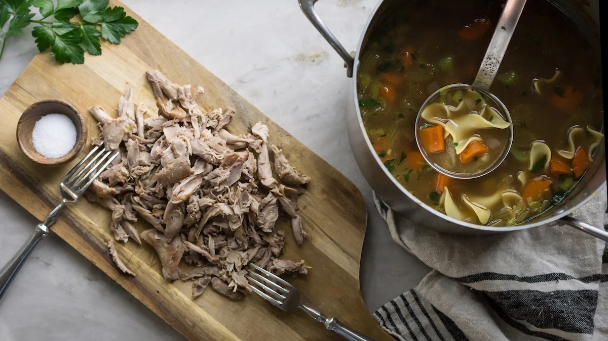

Squirrel Noodle Soup

Ingredients
- 4 squirrels
- 1 medium onion, chopped
- 2 carrots, sliced
- 2 celery sticks, sliced
- 6-8 cloves of garlic, chopped
- Bouquet garni: sprigs of fresh thyme, rosemary, and parsley tied together with twine
- 1 lemon, juiced
- 1/4 tsp black pepper
- 3 quarts poultry stock (more may be needed)
- 2-3 cups egg noodles
- 2-3 Tbsp oil, clarified butter, or schmaltz
- Salt and pepper to taste
Instructions
-
Break the skinned squirrels down into 6 serving pieces by cutting off all four
legs at the hip and shoulder joints, then cutting the body in half. Season
each piece with salt and pepper.
-
Heat a large stockpot over medium-high heat. Add a tablespoon of cooking fat
and brown the squirrel pieces, making sure to not over-crowd the pan. Work in
batches and add more oil or clarified butter if needed. After each piece has
browned, remove and set aside.
-
Add another tablespoon of cooking oil to the pan. Once the fagt shimmers, add
the onion and sauté until translucent. Add the celery, carrots, and garlic.
Continue to sauté until they begin to soften.
-
Return the squirrel to the pot and squeeze lemon juice over the top. Drop in
the bouquet garni and season with black pepper. Pour in all of the stock and
stir to combine.
-
Increase the heat until the liquid just barely begins to bubble, then reduce
it to low and maintain a gentle simmer. You can skim scum off the top as it
cooks. Cook for roughly 3 hours, or longer, until the meat is fork-tender.
Don't cover the stock pot while cooking so that the liquid reduces into a rich
and flavorful broth.
-
Use tongs to fish out each piece of squirrel and the bouquet garni. Use your
fingers or a fork to shred the meat off the bones. Discard the bones and place
the shredded meat back in the pot.
-
Increase the heat so that the soup comes to a boil. Add the egg noodles one
handful at a time until you reach the desired amount. Gently simmer the soup
until the egg noodles are soft, about 10 minutes. Add more stock if the soup
reduced too much, or if the ratio of noodle to liquid is off.
-
Season to taste with salt and pepper. Garnish with chopped celery or parsley leaves if desired.
Click here to return to recipes.
Click here to see this recipe and accompanying article.